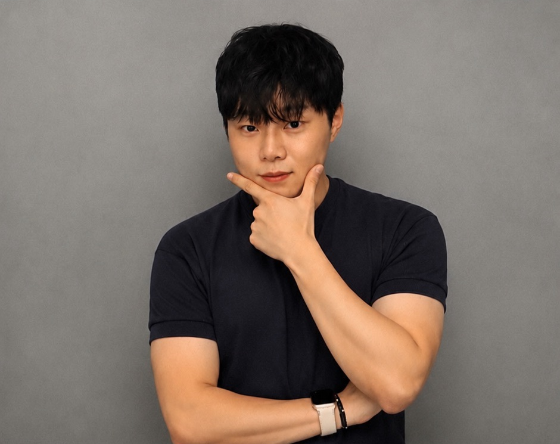

다양한 조리 분야
한식·일식·중식·양식과 전통 디저트를 조리합니다. 재료 손질부터 조리, 플레이팅까지의 과정을 포트폴리오에 담았습니다.
조리 실무와 교육 경험을 갖춘 요리사입니다.
호텔조리과에서 쌓은 기본기를 바탕으로 주방 실무와 조리 자격증 교육을 경험했습니다. 한식·일식·중식·양식 요리를 직접 만들고 기록합니다.

교육과 실무, 직접 만든 요리로 소개합니다.
안녕하세요, 이윤건입니다. 호텔조리과에서 조리를 공부하고, 일식 전문점에서 주방 실무와 팀원 간 협업을 경험했습니다. 성인반과 학생반을 대상으로 조리 자격증 강의에도 참여했습니다.
한식·일식·중식·양식과 전통 디저트를 조리합니다. 재료 손질부터 조리, 플레이팅까지의 과정을 포트폴리오에 담았습니다.
주방에서의 협업 경험과 조리 자격증 강의 경험을 바탕으로, 직접 만드는 일과 조리 과정을 전달하는 일을 함께 경험했습니다.
조리·요리 관련 자격 7종을 보유하고 있습니다. 2022 서울국제식음료외식조리경연대회에서 금상과 국회의장상을 수상했습니다.
교육 이력과 현장 경험, 수상 내역을 확인하세요.
한국호텔실용관광대학교
주방 실무 및 팀원 간 협업 경험
성인반·학생반 교육 활동
2022 서울국제식음료외식조리경연대회
금상 · 국회의장상
분야별 요리와 조리 과정을 소개합니다.
사진을 누르면 요리 설명을 볼 수 있습니다.
재료의 준비부터 한 접시의 완성까지, 직접 만든 요리의 기록입니다.